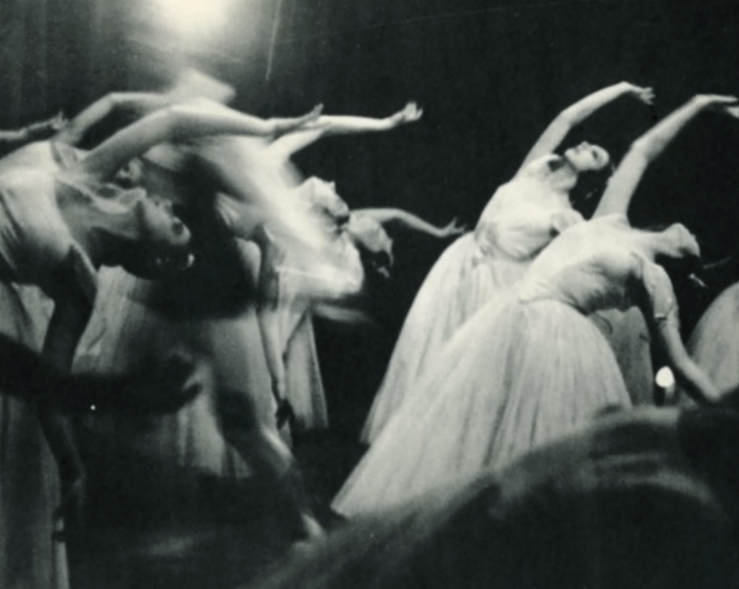

Introduce
Works
Interviw
Philosophy
Copyright Alexey Brodovitch. All rights reserved.
BAZAAR
알렉세이 브로도비치의 잡지디자인
알렉세이 브로도비치는 1898년 러시아 제국 (지금의 벨로루시) 오골리치 오골리치 에서 부유한 폴란드 가정에서 태어났습니다. 그의 아버지 Cheslau 또는 Vyacheslav Brodovitch는 존경받는 의사, 정신과 의사 및 사냥꾼이었습니다 . 그의 어머니는 아마추어 화가였습니다. 러일전쟁 때 그의 가족은 모스크바 로 이사했고 그의 아버지는 일본 포로들을 위한 병원에서 일했다. Alexey는 상트페테르부르크 의 명문 기관인 Prince Tenisheff School 에서 공부하도록 파견되었으며 결국 Imperial Art Academy 에 등록할 의도를 가지고 있었습니다. 그는 어린 시절까지 미술에 대한 정식 교육을 받지 않았지만 종종 도시에서 열린 콘서트에서 청중들에게 고귀한 프로필을 스케치했습니다. 16세의 어린 나이에 제1차 세계대전이 발발하자 브로도비치는 제국 미술 아카데미에 들어가겠다는 꿈을 접고 가출해 러시아군 에 입대했습니다 . 얼마 지나지 않아 그의 아버지는 그를 집으로 데려왔고 Alexey가 학교를 마칠 수 있도록 개인 교사를 고용했습니다. 졸업 후 Brodovitch는 여러 차례 다시 도망 쳤습니다. 그는 이렇게 회상합니다.
파리 에 도착한 Brodovitch는 화가가 되고 싶었습니다. 파리에 거주하는 러시아인 백인 이민자 인 Brodovitch는 자신이 가난하고 난생 처음으로 일해야 한다는 것을 알게 되었습니다. 그는 집에 그림을 그리는 직업을 가졌고 그의 아내 Nina는 재봉사로 일했습니다. 그들은 19세기 말에 파리에 정착한 러시아 예술가들 사이에서 몽파르나스 지역의 싸고 작은 아파트에 살았습니다. 예술가 그룹은 강사 없이 회화 및 조각 수업을 제공하는 저렴한Académie Vassilieff에서 만났습니다. 이 젊은 러시아 예술가들과의 관계는 Diaghilev 의 Ballets Russes 의 배경 화가로서 더 많은 예술 작업으로 이어졌습니다. 이러한 다양한 예술적 영향 중에서 Brodovitch는 디자이너로서의 시작을 찾았습니다.
파리 에 도착한 Brodovitch는 화가가 되고 싶었습니다. 파리에 거주하는 러시아인 백인 이민자인 Brodovitch는 자신이 가난하고 난생 처음으로 일해야 한다는 사실을 알게
되었습니다. 그는 집에 그림을 그리는 직업을 가졌고 그의 아내 Nina는 재봉사로 일했습니다. 그들은 19세기 말에 파리에 정착한 러시아 예술가들 사이에서 몽파르나스 지역의 싸고 작은 아파트에 살았습니다. Archipenko, Chagall 및 Nathan Altman을 포함한 이 예술가 그룹은 강사 없이 회화 및 조각 수업을 제공하는 저렴한 Académie Vassilieff에서 만났습니다. 이 젊은 러시아 예술가들과의 관계는 Diaghilev 의 Ballets Russes 의 배경 화가로서 더 많은 예술 작업으로 이어졌습니다.
되었습니다. 그는 집에 그림을 그리는 직업을 가졌고 그의 아내 Nina는 재봉사로 일했습니다. 그들은 19세기 말에 파리에 정착한 러시아 예술가들 사이에서 몽파르나스 지역의 싸고 작은 아파트에 살았습니다. Archipenko, Chagall 및 Nathan Altman을 포함한 이 예술가 그룹은 강사 없이 회화 및 조각 수업을 제공하는 저렴한 Académie Vassilieff에서 만났습니다. 이 젊은 러시아 예술가들과의 관계는 Diaghilev 의 Ballets Russes 의 배경 화가로서 더 많은 예술 작업으로 이어졌습니다.
1898~1971
Art director, photographer
파리에서 영향력 있는 시절
출생

01
Introduce
Alexey Brodovitch
02
Works
B
Z
A
A
R
A


살아있는 움직임, 발레
결혼 Les Noces
사진이 책이라는 형태 속에 놓이게 되면 독서 공간에서 새로운 이야기가 만들어지게 되고, 우리는 그것을 읽어내려고 합니다. 디자이너는 사진과 대화하면서 이야기를 만들고 사진에 생명을 불어넣고 사진작가의 의도를 살리는 역할을 하는 사람이라고 생각합니다.
사진작가가 하는 일이 무엇이라고
생각하나요?
생각하나요?
A
Q
03
Intervew
A
Q
'책'이라는 이름 안에 수록되는 사진은 긴 호흡을 필요로 합니다. 텍스트 및 다른 사진과의 상호 관계는 어떠한지, 선택한 사진이 책의 콘셉트와 어울리는지, 사진의 전체적인 흐름이 텍스트의 흐름에 위배되지는 않는지, 보다 그래픽적인 조작이 필요한 것은 아닌지 등의 여러 질문을 통해 사진은 비로소 책이라는 공간에 들어서는 것입니다.
평소 책을 디자인할 때 어떤 것을
신경쓰시나요?
신경쓰시나요?
A
Q
새로운 디자인에 대한 영감은
어디서 얻으시나요?
어디서 얻으시나요?
"도시의 반짝거리는 불빛들, 축음기에서 돌아가는 레코드판의 표면, 붉은 미등의 멋진 반사, 젖은 보도블록 위를 지나가는 자동차 타이어 소리, 비행기 실루엣에서 보이는 용맹과 기상. 일상생활의 단조로움과 지루함 속에서 새로운 미와 미학은 발견되어야만 합니다.
"Can design impress someone?
Then surprise yourself first"
Then surprise yourself first"
디자인을 통해 누군가를 감동시킬 수 있는가?
그렇다면 먼저 자신을 놀라게 하라
그렇다면 먼저 자신을 놀라게 하라
04
Philosophy
"There is no secret to a good layout.
What matters is the sense of
constant change and confrontation"
What matters is the sense of
constant change and confrontation"
"In the monotony and boredom
of everyday life,
new beauty and aesthetics
must be discovered."
of everyday life,
new beauty and aesthetics
must be discovered."
좋은 레이아웃을 위한 비결은 없다.
중요한 것은 지속적인 변화와 대립에 관한 감각이다
중요한 것은 지속적인 변화와 대립에 관한 감각이다
일상 생활의 단조로움과 지루함 속에서 새로운 미와 미학은 발견되어야만 한다
Introduce
Works
Interviw
Philosophy
Copyright Alexey Brodovitch. All rights reserved.